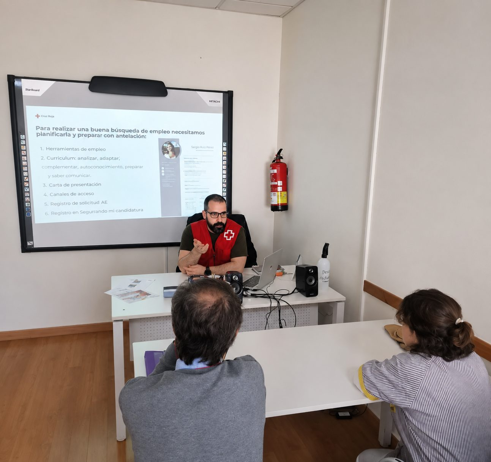
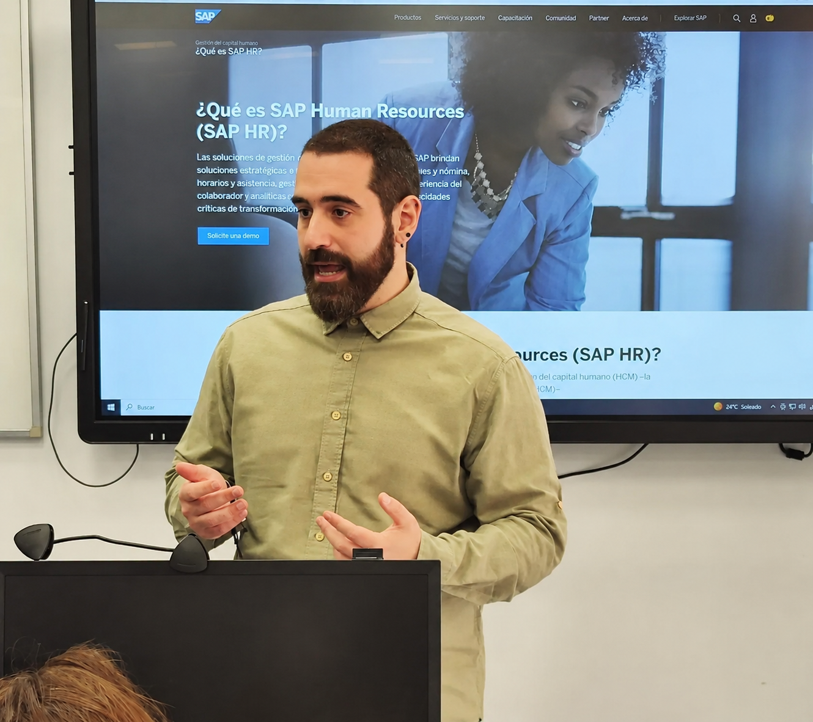

Combino la lógica del backend y la creatividad del frontend, con experiencia previa como consultor SAP HCM, para crear aplicaciones completas, robustas y funcionales.
Antes de desarrollar software trabajé en departamentos de recursos humanos, administración, ventas, atención al cliente y he realizado trabajos de montaje y desmontaje de eventos. Esa experiencia me enseñó a entender necesidades, hacer las preguntas correctas y comunicar soluciones con claridad.
En 2026 finalicé la formación profesional de Desarrollo de Aplicaciones Multiplataforma (DAM) y en mis prácticas de empresa participé en el proyecto MZ-Asistencial, una aplicación multiplataforma que ayuda a gestionar los recursos necesarios entre centros, mutuas, etc. en un sistema de salud privado para Mercanza. Hoy centro mi perfil tanto en backend como en frontend y continúo especializándome mediante un Máster en Desarrollo y Aplicaciones Web y otras formaciones más.
Vengo de un perfil analítico (consultoría SAP HCM) — busco la causa raíz antes de programar la solución.
Mi cambio de carrera hacia el desarrollo me ha entrenado para adaptarme rápido a tecnologías y contextos nuevos.
Aprendí a programar por mi cuenta y sigo formándome — así pasé de RRHH al desarrollo de software.
En GoFight trabajé con un equipo de 3 personas, repartiendo tareas y apoyándonos entre todos.
Antes de programar, entiendo el proceso de negocio — un hábito que traigo de la consultoría SAP.
Dar soporte a incidencias en producción me enseñó a revisar cada caso con cuidado.
Compagino formación, prácticas y proyectos personales sin perder de vista los plazos.
Organizo mis tareas y prioridades de forma autónoma, sin necesitar supervisión constante.
Explicar soluciones técnicas a perfiles no técnicos era el día a día como consultor SAP.
He aplicado todo esto en proyectos como GoFight y MZ-Asistencial, de principio a fin.
Apoyo los Objetivos de Desarrollo Sostenible favoreciendo su integración, ya que uso materiales tecnológicos reacondicionados en mi ámbito laboral y planteo acciones diarias para fomentar la concienciación social hacia el bien común y el cuidado del medio ambiente.
Click_A es la iniciativa de voluntariado digital de Cruz Roja en Andalucía (continuación de Andalucía Compromiso Digital) para reducir la brecha digital entre la población en situación de vulnerabilidad. Como voluntario en la provincia de Sevilla, imparto talleres de competencias digitales —uso seguro de dispositivos, internet y redes sociales— a colectivos sociales desfavorecidos: personas mayores, demandantes de empleo y jóvenes, ayudando a que puedan desenvolverse de forma autónoma, segura y efectiva en su día a día digital.

Disfruto compartiendo lo que sé sobre tecnología con otras personas. He participado en formaciones y exposiciones —como una charla sobre SAP Human Resources (SAP HR)— explicando las ventajas de aplicar distintas herramientas digitales en el entorno laboral. Para mí, ayudar a otros a entender y aplicar la tecnología es igual de valioso en el ámbito profesional que en el día a día.

Cargando actividad de GitHub…
Empresa especializada en soluciones tecnológicas para el sector de la salud laboral. Participé en el desarrollo real de MZ-Asistencial, una aplicación empresarial en migración de un sistema legacy Visual Basic a un stack moderno.
Desarrollador de FullStack multiplataforma
Multinacional japonesa de gestión de servicios tecnológicos y de comunicaciones especializada en la integración de sistemas. Progresé de Trainee a Consultor Junior dentro del área de SAP SuccessFactors / SAP HCM.
Trainee SAP SuccessFactors / SAP HCM
Consultor Junior SAP SuccessFactors / SAP HCM
PrometeoFP · ThePower
Universidad Católica San Antonio de Murcia (UCAM) / ThePower
PrometeoFP · ThePower | Nota Media: 8,39
Cloud Formación
Tokio School | Nota Media: Matrícula de Honor
Mis recomendaciones profesionales respaldan iniciativa, autonomía, responsabilidad, comunicación y capacidad de colaboración. También puedes consultar el artículo del centro que me reconocieron mi esfuerzo en la Consultoría SAP sacando en el trabajo final una Matrícula de honor.
// blog
Sección lista desde el lanzamiento, sin posts todavía — se decidirán los primeros temas más adelante.
Escríbeme un email o conecta en LinkedIn. Respondo siempre.